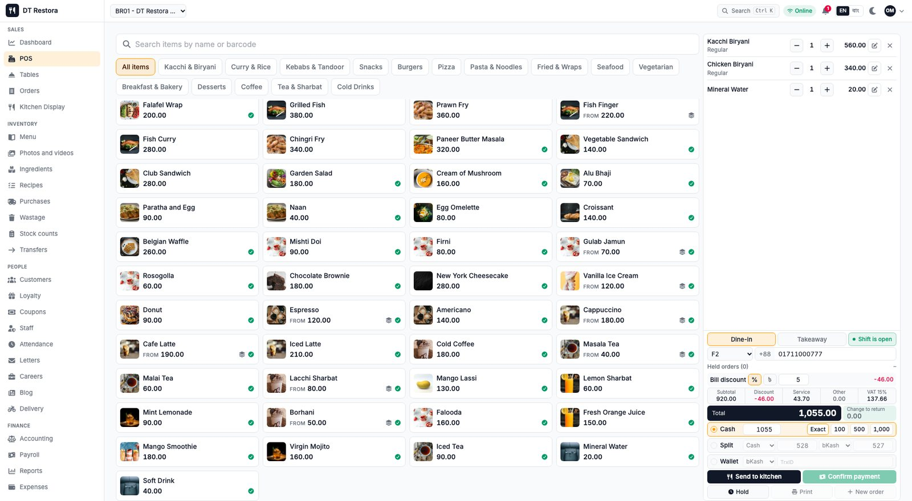
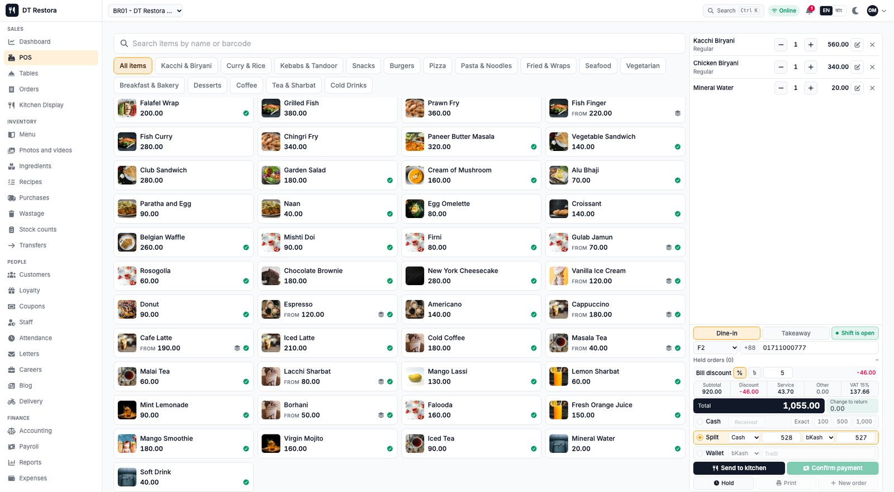
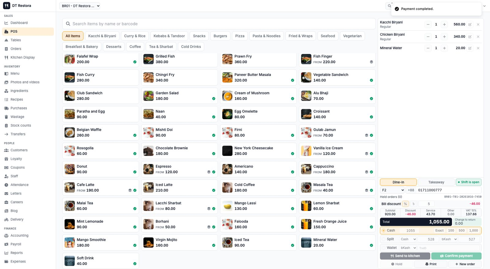

আপনার রেস্টুরেন্ট আসলে কত আয় করে, জানুন নিখুঁতভাবে।

DT Restora
কাচ্চি৫৬০
বিরিয়ানি৩৪০
পানি২০
মোট১,০৫৫
বিকাশে পরিশোধ
হোল্ড ও আবার চালু
ভাগ করে পেমেন্ট
বিকাশ, নগদ, কার্ড
পিওএস, রান্নাঘর, স্টক, কর্মী ও বেতন, লয়্যালটি, ডেলিভারি, ওয়েবসাইট ও হিসাব, সব এক সিস্টেমে, বাংলাদেশের রেস্টুরেন্ট ও ক্যাফের জন্য।
ছাড়কৃত মাসিক মূল্য
১,০০০ টাকাপ্রতি মাসে
প্রথম মাস ফ্রি
dt-restora.datatechbd.com
ডাটাটেক বিডি লিমিটেড, ঢাকা · বাংলা ও ইংরেজি
DT Restora
এক নজরে
আগে এই পাতাটি পড়ুন
প্রতিটি মালিকের মনে তিনটি প্রশ্ন।
এই বইয়ে সহজ ভাষায় উত্তর দেওয়া হয়েছে। হাতে দুই মিনিট থাকলে এই পাতাই যথেষ্ট।
১
আমার ব্যবসার জন্য এটা কেন দরকার?
কারণ খাতা, আন্দাজ আর ছড়ানো-ছিটানো অ্যাপ আপনার টাকা কোথায় যাচ্ছে তা আড়াল করে রাখে। যে খরচ চোখে পড়ে না, তা ঠিক করা যায় না। পাতা ৩ থেকে ৪
২
এই সফটওয়্যার আমাকে কীভাবে সাহায্য করবে?
বিক্রি বাড়ায়, অপচয় কমায়, সার্ভিস দ্রুত করে, আর প্রতিদিন প্রতিটি শাখার আসল লাভ দেখায়। পাতা ৫ থেকে ১৮
৩
আমার রেস্টুরেন্ট কীভাবে ডিজিটাল করব?
পাঁচটি সহজ ধাপ, ফ্রি ডেমো দেখা থেকে শুরু করে প্রথম দিনের বিক্রি পর্যন্ত। পাতা ১৯ থেকে ২০
আমাদের সহজ প্রতিশ্রুতি। কী বিক্রি হলো, কত খরচ হলো, কী নষ্ট হলো আর হাতে কত থাকল, সবই সবসময় আপনি জানবেন। মাঝরাতে স্প্রেডশিট নয়, মাস শেষে চমকও নয়।
বেশি অর্ডার
কম অপচয়
দ্রুত সার্ভিস
পরিষ্কার রিপোর্ট
DT Restora
প্রথম অংশ · কেন দরকার
প্রথম অংশ · কেন
আপনার রেস্টুরেন্ট টাকা হারাচ্ছে এমন জায়গায়, যা আপনি দেখতে পান না।
ব্যস্ত রান্নাঘর সাধারণত খাবার খারাপ বলে ডুবে না। ডোবে, কারণ ছোট ছোট ফুটো মাসের পর মাস কারও চোখে পড়ে না।
যে অপচয়ের কেউ হিসাব রাখে না
নষ্ট হওয়া, পড়ে যাওয়া বা এমনি দিয়ে দেওয়া খাবার কোনো চিহ্ন ছাড়াই হারিয়ে যায়, তাই সেই খরচ রিপোর্টে আসে না।
আন্দাজের স্টক
রান্নাঘরে উপকরণ ফুরিয়ে গেলে তবেই জানা যায়, নয়তো তাকে কী আছে কেউ না জানায় বেশি কিনে ফেলা হয়।
বিল আর ক্যাশ মেলে না
হাতে লেখা বিল, অনুমোদন ছাড়া ছাড় আর ক্যাশ ড্রয়ারের গরমিল পরে খুঁজে বের করা কঠিন।
লাভ জানা যায় অনেক দেরিতে
মাস শেষে হিসাব মেলালে তিন সপ্তাহ আগের ভুল শোধরানোর সুযোগ আর থাকে না।
আলাদা ট্যাবলেটে ডেলিভারি অ্যাপ
অর্ডার আসে আলাদা আলাদা ডিভাইসে, হাতে আবার টাইপ করতে হয়, আর কমিশন চুপচাপ লাভ খেয়ে ফেলে।
যে শাখাগুলোর তুলনা করা যায় না
একাধিক শাখা থাকলে পরিষ্কার চিত্রের বদলে ভরসা করতে হয় ফোনকল আর বিশ্বাসের উপর।
যা দেখা যায় না, তা সামলানো যায় না। DT Restora এই প্রতিটি অন্ধ জায়গাকে আপনার স্ক্রিনে একটি সংখ্যা করে তোলে।
DT Restora
প্রথম অংশ · কেন দরকার
ডিজিটাল হওয়ার যুক্তি
ডিজিটাল হওয়া খরচ নয়। এটাই আয়ের বেশি অংশ নিজের কাছে রাখার উপায়।
আজ, খাতা-কলমেDT Restora দিয়ে
হাতে লেখা বিল
প্রতিটি অর্ডার ক্যাশ কাউন্টারেই রেকর্ড হয়
আন্দাজে স্টক গোনা
প্রতিটি বিক্রিতে স্টক নিজে কমে
অপচয় ধরা পড়ে অনেক দেরিতে
প্রতিটি ক্ষতি কারণ ও খরচসহ লেখা থাকে
লাভ জানা যায় মাস শেষে
আজই দেখুন শাখাভিত্তিক লাভ
বিক্রি শুধু দোকানের দরজায়
ওয়েবসাইট, কিউআর ও ডেলিভারি অর্ডার এক জায়গায়
বিশ্বাসের উপর ক্যাশ সামলানো
শিফটের গণনা আর প্রতিটি পরিবর্তনের কার্যকলাপ লগ
মালিকের জন্য এর মানে কী
লাভের মার্জিন বাঁচান
খাবারের খরচ, অপচয় ও কমিশন লাভ খেয়ে ফেলার আগেই দেখে নিন।
সময় বাঁচান
অর্ডার বারবার টাইপ করা আর হাতে রিপোর্ট বানানো বন্ধ করুন।
নিশ্চিন্তে ঘুমান
প্রতিটি রান্নাঘরে না দাঁড়িয়েই সব শাখা নিয়ন্ত্রণ করুন।
গ্রাহকেরা এখন এটাই আশা করেন। তাঁরা ফোনে অর্ডার করেন, কিউআর কোড স্ক্যান করেন, ডেলিভারির অবস্থা দেখেন। যে রেস্টুরেন্ট এটা দিতে পারে, সে-ই আবার অর্ডার পায়।
DT Restora
দ্বিতীয় অংশ · যেভাবে সাহায্য করে
দ্বিতীয় অংশ · যেভাবে সাহায্য করে
শুধু পিওএস নয়। একটি পূর্ণাঙ্গ রেস্টুরেন্ট সিস্টেম।
নিচের প্রতিটি অংশ একই মেনু, গ্রাহক, কর্মী ও হিসাব ব্যবহার করে। কাউন্টারে একটি বিক্রি হলে রান্নাঘর, স্টক, খাতা ও মালিকের ড্যাশবোর্ড নিজে থেকেই হালনাগাদ হয়, কাউকে দুবার লিখতে হয় না।
বিক্রি
পিওএস ও টেবিল
কিচেন ডিসপ্লে
অর্ডার ও পেমেন্ট
অর্ডারের ওয়েবসাইট
গ্রাহক
লয়্যালটি পয়েন্ট
কুপন
কিউআর টেবিল অর্ডার
গ্রাহকের অ্যাকাউন্ট
স্টক
রেসিপি ও খরচ
ক্রয়
অপচয়ের তালিকা
গণনা ও স্থানান্তর
কর্মী
কর্মী ও শিফট
হাজিরা মেশিন
বেতন ও বেতনের স্লিপ
চিঠিপত্র
প্রসার
ডেলিভারি ও রাইডার
ডেলিভারি অ্যাপ
ক্যারিয়ার ও ব্লগ
ছবি ও ভিডিও গ্যালারি
নিয়ন্ত্রণ
হিসাবরক্ষণ
রিপোর্ট ও এক্সপোর্ট
একাধিক শাখা
কার্যকলাপের লগ ও অফলাইন সিঙ্ক
বেশি অর্ডারসব চ্যানেল খোলা
কম অপচয়ক্ষতি চোখের সামনে
দ্রুত সার্ভিসকাউন্টার ও রান্নাঘর একসাথে
পরিষ্কার রিপোর্টএকটাই সঠিক সংখ্যা
২৪টি টুল, একটি লগইন। শুরু করুন কাউন্টার ও রান্নাঘর দিয়ে, প্রস্তুত হলে স্টক, কর্মী, লয়্যালটি, ডেলিভারি আর ওয়েবসাইট চালু করুন।
DT Restora
দ্বিতীয় অংশ · বিক্রি
পিওএস টার্মিনাল
ক্যাশিয়ার কয়েক মিনিটেই শিখে ফেলবেন এই কাউন্টার।
ট্যাবলেট বা টাচ স্ক্রিনে দ্রুত অর্ডার নেওয়া যায়, সব পেমেন্ট পদ্ধতি আর রসিদ প্রিন্টার একসাথে কাজ করে।
DT Restora
কাচ্চি৫৬০
বিরিয়ানি৩৪০
পানি২০
মোট১,০৫৫
বিকাশে পরিশোধ
হোল্ড ও আবার চালু
ভাগ করে পেমেন্ট
বিকাশ, নগদ, কার্ড
dt-restora.datatechbd.com/admin

নগদ আর বিকাশে একটি বিল ভাগ করে পরিশোধ
dt-restora.datatechbd.com/admin

পেমেন্ট নিশ্চিত, রসিদ প্রিন্টের জন্য তৈরি
টেবিল, হোল্ড ও আবার চালুগ্রাহক ঠিক করতে সময় নিলে টিকেট রেখে দিন
নগদ টাকা, বিকাশ, নগদ, কার্ডফেরতের হিসাবসহ
ভাগ করে পেমেন্টএক বিলে দুই বা তার বেশি পদ্ধতি
ছাড়ের অনুমোদনসীমার বেশি হলে ম্যানেজারের অনুমতি লাগে
৮০ মিমি থার্মাল রসিদপুনরায় প্রিন্টের হিসাব থাকে
শিফটের ক্যাশ গণনাহওয়ার কথা, গোনা হলো, পার্থক্য
DT Restora
দ্বিতীয় অংশ · বিক্রি
আপনার নিজের অর্ডারের ওয়েবসাইট
আপনি যখন রান্নায় ব্যস্ত, অর্ডার তখন আসতেই থাকে।
মেনুর ছবি, চেকআউট ও সরাসরি ট্র্যাকিংসহ দুই ভাষার, মোবাইল-প্রথম ওয়েবসাইট। প্রতিটি অর্ডার সরাসরি কিচেন স্ক্রিনে আসে।
প্রতিটি অবস্থার পরিবর্তন গ্রাহকের ট্র্যাকিং পাতায় দেখা যায়। রাইডার মোবাইল পাতা ব্যবহার করেন, ডিউটি চালু-বন্ধ করেন এবং যাত্রার সময় লোকেশন শেয়ার করেন।
রাইডার নির্ধারণসিস্টেম ফাঁকা রাইডারের নাম সুপারিশ করে
স্ক্রিন, বার্তা, এসএমএস ও রসিদ, সবই দুই ভাষায় চলে।
সীমাবদ্ধতা নিয়েও স্পষ্ট কথা। বিকাশ, নগদ ও কার্ড পেমেন্ট, ডেলিভারি অ্যাপের অর্ডার, এসএমএস আর ওয়েবসাইটে ইন্টারনেট লাগে। অফলাইনে স্ক্রিন তা পরিষ্কার জানায়, আর ক্যাশিয়ার নগদে বিক্রি চালিয়ে যেতে পারেন।
DT Restora
তৃতীয় অংশ · কীভাবে ডিজিটাল হবেন
তৃতীয় অংশ · কীভাবে
পাঁচটি সহজ ধাপে ডিজিটাল হন।
প্রযুক্তি জানতে হবে না। ডেমো দিয়ে শুরু করুন, চলুন আপনার রান্নাঘরের গতিতে।
১
লাইভ ডেমো দেখুন
dt-restora.datatechbd.com খুলে প্রতিটি স্ক্রিন চালিয়ে দেখুন। কিছু ইনস্টল করতে হবে না, ঝুঁকিও নেই।
২
আমরা ইনস্টল করে দিই
ডাটাটেক বিডি একবারেই ইনস্টল করে দেয়। আপনার নিজের সিস্টেম, নিজের তথ্য, আপনার শাখাগুলো।
৩
মেনু, রেসিপি ও টিম যোগ করুন
দাম, সাইজ, টেবিল, উপকরণ ও কর্মীর ভূমিকা একবারই সাজানো হয়। রেসিপি দিলেই অপচয় ও খরচের হিসাব চালু হয়।
৪
কর্মীদের প্রশিক্ষণ দিন
প্রতিটি ভূমিকার জন্য বাংলা ও ইংরেজিতে ছোট নির্দেশিকা। ক্যাশিয়ার, রান্নাঘর ও ম্যানেজার, প্রত্যেকে শুধু নিজের স্ক্রিন শেখেন।
৫
চালু করুন, লাভ দেখুন
অর্ডার নেওয়া শুরু করুন। প্রতিদিন ড্যাশবোর্ড দেখুন আর ফুটো ধরা পড়লেই বন্ধ করুন।
যা যা লাগবে
কাউন্টারের জন্য ট্যাবলেট, টাচ মনিটর বা কম্পিউটার
রসিদের জন্য ৮০ মিমি থার্মাল প্রিন্টার
ঐচ্ছিক: ক্যাশ ড্রয়ার, বারকোড স্ক্যানার
রান্নাঘরের জন্য একটি স্ক্রিন বা প্রিন্টার
নিজের গতিতে এগিয়ে যান
পিওএস ও রান্নাঘর দিয়ে শুরু করুন। প্রস্তুত হলে স্টক, ওয়েবসাইট, ডেলিভারি ও লয়্যালটি যোগ করুন।
কম ঝুঁকির শুরু
ইনস্টলেশনের পর প্রথম মাস ফ্রি, তাই প্রথম মাসিক বিলের আগেই আপনি এর মূল্য বুঝতে পারবেন।
ধাপে ধাপে, নিজের গতিতে বাড়ান
ধাপ ১
কাউন্টার ও রান্নাঘর
পিওএস, রসিদ, কিচেন ডিসপ্লে ও দৈনিক বিক্রি।
ধাপ ২
স্টক ও খরচ
রেসিপি, অপচয়, ক্রয় ও খাবারের খরচ।
ধাপ ৩
বিক্রি বাড়ানো
ওয়েবসাইট, কিউআর, ডেলিভারি, লয়্যালটি ও আরও শাখা।
কোথা থেকে শুরু করবেন বুঝতে পারছেন না? 8801304734623 নম্বরে ফোন বা হোয়াটসঅ্যাপ করুন, আপনার রেস্টুরেন্টের জন্য সঠিক প্রথম ধাপ আমরা বলে দেব।
DT Restora
তৃতীয় অংশ · মূল্য ও অফার
সহজ ও স্বচ্ছ মূল্য
ফ্রিতে শুরু করুন। তারপর মাসে ১,০০০ টাকা।
১,০০০
টাকা প্রতি মাসে নিয়মিত মূল্য ৫,৭০০ টাকা
এটি ছাড়কৃত মাসিক মূল্য। নিয়মিত মূল্যের চেয়ে প্রতি মাসে আপনি ৪,৭০০ টাকা কম দেন।
মাসিক মূল্যেই অন্তর্ভুক্ত
পিওএস, কিচেন ডিসপ্লে ও অফলাইন মোড
স্টক, রেসিপি, অপচয় ও ক্রয়
অর্ডারের ওয়েবসাইট, কিউআর ও ডেলিভারি টুল
ড্যাশবোর্ড, রিপোর্ট ও হিসাবরক্ষণ
প্রথম মাস ফ্রি
ইনস্টলেশনের পর থেকে আপনার ফ্রি মাস শুরু।
২,৫০০ টাকা ইনস্টলেশন
এককালীন ফি। এক বছর ব্যবহারের পর বাতিল করলে ফেরতযোগ্য।
বার্ষিক: ২ মাস ফ্রি
বছরের টাকা একসাথে দিলে দুই মাস ফ্রি। দশ মাসের টাকা দিন, ব্যবহার করুন বারো মাস।
কখন
কত দেবেন
ইনস্টলেশনের সময়
একবার ২,৫০০ টাকা
প্রথম মাস
ফ্রি
মাসিক প্ল্যান
প্রতি মাসে ১,০০০ টাকা
বার্ষিক প্ল্যান
২ মাস ফ্রি
কেন এটি নিজের খরচ নিজেই তুলে আনে
চোখে দেখা অপচয় কমে, ক্যাশের গরমিল কমে, হাতে লেখা বিল আবার যোগ করতে হয় না, আর সব চ্যানেল থেকে অর্ডার বাড়ে। এর প্রতিটিই এমন লাভ বাঁচায়, যা আজ খাতায় চোখেই পড়ে না।
আপনার ফ্রি ডেমো বুক করুন
8801304734623 মোবাইল ও হোয়াটসঅ্যাপ
DT Restora
মালিকদের সাধারণ প্রশ্ন
জেনে রাখা ভালো
সাধারণ প্রশ্নের সংক্ষিপ্ত উত্তর।
আমি কম্পিউটার ভালো পারি না।
প্রতিটি ভূমিকা শুধু নিজের টুলসহ সহজ স্ক্রিন দেখে, আর বাংলা ও ইংরেজিতে ছোট নির্দেশিকা দেওয়া হয়।
ইন্টারনেট চলে গেলে কী হবে?
পিওএস ও কিচেন স্ক্রিন চলতেই থাকে। নগদ অর্ডার জমা থাকে, সংযোগ ফিরলে সিঙ্ক হয়ে যায়।
আমার একাধিক শাখা থাকলে?
শাখার ব্যবস্থা আগে থেকেই আছে। ম্যানেজার নিজের শাখা দেখেন, আপনি দেখেন সবগুলো, লাভ পাশাপাশি।
বিকাশ ও নগদে টাকা নিতে পারব?
হ্যাঁ। নগদ টাকা, বিকাশ, নগদ ও কার্ড, সাথে একাধিক পদ্ধতিতে ভাগ করে পেমেন্টও।
ওয়েবসাইট কি আমার লাগবেই?
প্রথম দিন থেকে নয়। কাউন্টার ও রান্নাঘর দিয়ে শুরু করুন, চাইলে পরে অনলাইন অর্ডার চালু করুন।
তথ্য কার?
আপনার। প্রতিটি গ্রাহকের আলাদা ইনস্টলেশন ও ডাটাবেস, সাথে প্রতিদিনের ব্যাকআপ।
ডেলিভারি অ্যাপ যুক্ত করা যাবে?
যেকোনো ডেলিভারি অ্যাপের অর্ডার প্রথম দিন থেকেই একটি স্ক্রিনে হাতে এন্ট্রি দেওয়া যায়। সরাসরি সংযোগ নির্ভর করে প্রতিটি প্ল্যাটফর্মের পার্টনার অনুমতির উপর।
ভ্যাট ও রসিদের কী হবে?
প্রতিটি শাখার জন্য ভ্যাট ও সার্ভিস চার্জ ঠিক করা যায়। স্থানীয় নিয়ম আপনার হিসাবরক্ষকের সাথে মিলিয়ে নিন।
সিদ্ধান্তের আগে নিজে দেখুন। dt-restora.datatechbd.com এ লাইভ ডেমো খুলে প্রতিটি স্ক্রিনে ঘুরে দেখুন।
DT Restora
কথা বলুন
আপনার পরের পদক্ষেপ
নিজের আসল হিসাব দেখতে প্রস্তুত?
ফ্রি ডেমো বুক করুন। আপনার মেনু, শাখা আর প্রশ্ন মাথায় রেখে আমরা পুরো সিস্টেম দেখিয়ে দেব।
মোঃ সাকির আহমেদ
ব্যবস্থাপনা পরিচালক, ডাটাটেক বিডি লিমিটেড
8801304734623
মোবাইল ও হোয়াটসঅ্যাপ
sakir.ahmed@datatechbd.com
dt-restora.datatechbd.com
মাসে ১,০০০ টাকা · প্রথম মাস ফ্রি
২,৫০০ টাকা ইনস্টলেশন
ডাটাটেক বিডি লিমিটেড, ঢাকা · বাংলাদেশের রেস্টুরেন্ট ও ক্যাফের জন্য DT Restora